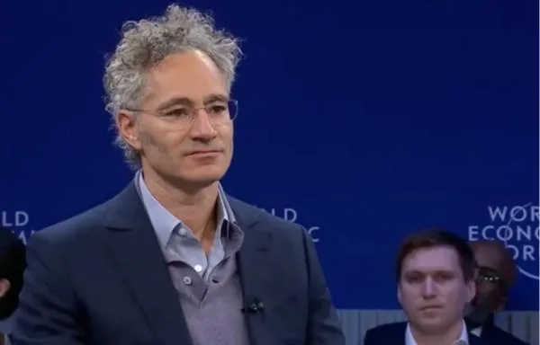
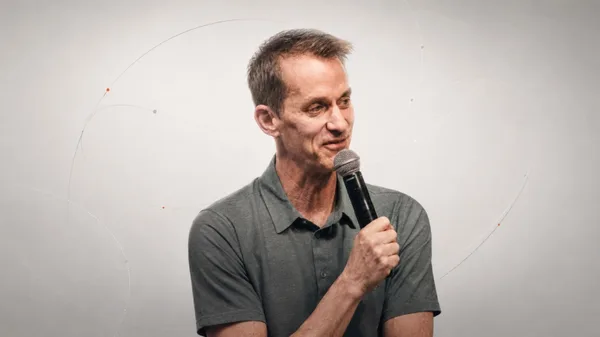

三个人的命运系于同一个未知数：递归自我改进是否成立。但他们各自的资本结构，决定了谁先出局。

Karp
Jeff Dean三个都是「顶尖 AI 精英脱离大机构单干」，但各自的资本结构决定了他们在价值链上占据完全不同的位置。
「买 Token 创造不了价值。」AI 价值链的现金流端：把模型装进高风险企业场景，靠信任和现场交付收钱。
Google 27 年老将离开大厂，用 AI 自动化「假设→实验→评估→迭代」的科学循环。Alphabet 第一年算力全包。
前 OpenAI 研究员，一篇 165 页宣言募到百亿资金，四倍杠杆重仓 AI 基建。方向看对，被杠杆反噬。
对撞的价值不在三人的「说法」一致，而在三个行动的资本结构差异恰好覆盖了 AI 价值链的完整光谱。
| 维度 | Karp（Palantir） | Jeff Dean（Discovery Loop） | Aschenbrenner（SA Fund） |
|---|---|---|---|
| 价值链位置 | 下游应用层 卖企业软件 |
上游研究层 自动化科研 |
金融定价层 赌 AI 方向 |
| 变现模式 | 现金流 150-180 亿 FCF 愿景 |
耐心资本 Alphabet 算力全包 |
信仰资本 杠杆放大敞口 |
| 时间尺度 | 当下现金流 「此刻的天堂」 |
十年尺度 PBC 法律承诺 |
长期叙事 爆仓后仍被追捧 |
| 对模型厂商 | 竞争 防下沉应用层 |
共生 + 竞争 算力来自 Alphabet |
下注 赌模型持续进步 |
| 信任契约 | 数据主权信任 客户怕 IP 外流 |
科研能力信任 单一金主供血 |
方向判断信任 身份认同型资金 |
| 杠杆硬度 | 软 远期预测 |
软 金主可撤 |
硬 margin call 不由信仰转移 |
每个对撞点：三人的立场互相矛盾，但拼起来恰好是一枚硬币的三面。
价值在应用层，模型层边际成本趋零会稀释。
价值在研究层。否则不会离开 Google 自立。如果模型层没价值，为什么要用 AI 自动化模型研究？
价值在叙事层。他的基金不产出任何技术，纯靠「AI 方向判断正确」获得百亿规模。
三者不矛盾：价值捕获正从「模型层」（烧钱换份额）向两侧分散：应用层吃现金流、研究层吃资本供给、金融层吃信仰溢价。真正被挤的是中间：纯模型层烧钱，三人都不是模型层玩家，都在「模型层的供应商或下游」赚钱。
卖数据主权信任，客户怕 IP 外流。
卖科研能力信任，Alphabet 供血 = 承认体内做不了。
卖方向判断信任，LP 信仰「他懂 AI」。
Aschenbrenner 的爆仓暴露了信任的极限。硅谷 LP 说「英雄的伤疤」，但 Citadel 的 margin call 是硬性的。信仰可以支撑估值，支撑不了杠杆。Karp 的现金流是软性的（远期预测）、Jeff Dean 的算力是软性的（金主可撤），只有 Aschenbrenner 的杠杆是硬性的，所以他第一个爆。这是资本结构决定论：谁的杠杆最硬，谁最先暴露 AI 叙事的裂缝。
「买 Token 创造不了价值」。Token 是成本，产出在应用层。
烧海量算力做实验循环。Token/算力是生产资料，关键指标是「实验循环数」不是 token 数。
基金不烧算力，只赌 AI 方向，算力是别人的事。
Karp 和 Jeff Dean 说的是同一件事的两面：「算力本身不创造价值，围绕算力的循环才创造价值」。Karp 的循环是「模型→企业场景→现金流」（应用循环），Jeff Dean 的循环是「假设→实验→评估→迭代」（科研循环）。Aschenbrenner 是唯一没有循环的人：只赌方向，不参与任何循环，价值锚最虚，靠杠杆放大，然后被杠杆反噬。
软件三层论里「PhD 团队 + LLM 壁垒最低」，明确认为研究层不是价值核心。
「用 AI 造更强的 AI」。Discovery Loop 的真正杀手锏，Alphabet 供血的真正原因。
基金重仓的正是「递归自我改进会加速」，SA 论文的核心论点。
Jeff Dean 和 Aschenbrenner 在同一侧（赌递归自我改进），Karp 在另一侧（赌应用层价值）。如果递归自我改进真的跑通，Karp 的「PhD 团队壁垒最低」会成立但应用层也会被压缩；如果跑不通，Jeff Dean 的十年故事缩水成 AutoML 加速器，Aschenbrenner 的杠杆叙事失去支点。三个人的命运在同一个未知数上：分歧不在「AI 有没有价值」，在「递归自我改进是否成立」，而这个变量三者都无法控制。
AI 叙事最极端的资本结构样本：两年走完别人一生的路，一个月走完下坡。
生于德国，父母均为医生。19 岁以全校第一毕业，获经济学与数理统计双学位，在校联合创立「有效利他主义」（EA）分会。后来这个理念把他带进了 FTX。
2022 年 2 月加入 FTX Future Fund（SBF 的慈善基金），直到 11 月 FTX 暴雷前夕离开。2023 年转投 OpenAI，进入 Ilya Sutskever 和 Jan Leike 领导的 Superalignment 团队。因一份安全备忘录与董事会产生分歧，2024 年 4 月被 OpenAI 以「信息泄露」为由解雇。一个月后 Superalignment 团队解散，Ilya 也离开了。
离开 OpenAI 仅两个月，他写出 165 页超级论文《情境感知：未来十年》：预测 AGI 到来、设想超级智能路径、描述人类四大风险。这篇宣言像病毒一样在硅谷和华盛顿疯传，科技圈开始叫他「AI 时代的先知」。
从 2.25 亿美元起步，二十个月后规模超 200 亿美元。LP 包括 Stripe 联合创始人、前 GitHub CEO、知名投资人。重仓 AI 基础设施（能源/算力/光通信/存储），Anthropic 占基金资产五分之一（估值 6150 亿→96500 亿）。最赚钱的一笔：SK 海力士。
成立以来累计回报 超 1000%，今年截至 6 月底年度净回报 439%，资产规模一度达 450 亿美元。粉丝像研读圣经一样分析他的持仓，甚至有 APP 推出「一键跟单」。Jane Street 罕见地把钱交给他。
一个月里纳斯达克 100 跌约 10%、费城半导体指数跌 25%、韩国市场回落超 30%。他重仓的 AI 基建股（Nebius、SanDisk、Bloom Energy、CoreWeave）月内跌幅超 30%。杠杆可能接近四倍，市场跌下来的每一美元都变成更深的一刀。公开账面单月亏损 47-55 亿美元，其中 93% 的亏损集中在 8 只 AI 基建重仓股。对冲设计失效：半导体看跌期权收益无法抵消多头亏损，空头反而因资金回流传统软件上涨产生亏损。
六天前他还在给投资人的信里说「这是 2025 年初以来最好的买入机会」，六天后他把这些「最好的买入机会」全部卖给了肯·格里芬的 Citadel。私募资产无法快速变现，融资尝试失败，基金实质终结，享年两岁。
卖出仓位次日美股 AI 板块大幅反弹。他的长期方向判断没错，但他已不再持有。最终成果被 Citadel 接手。「他没有突然改变对 AI 的判断，只是他的账户已经没有资格继续等待。」
margin call 后他致信投资者认错、清除全部杠杆，称这是「代价高昂但无价的教训」。反常识的是：爆仓后短短几天，大批硅谷投资者主动联系要求追加投资，基金反而「暂不接受新资金」。红杉合伙人 Pat Grady 公开说「他将长期是硅谷的重要人物」，Elad Gil 宣布首次申请入资，Redpoint 的 Logan Bartlett 点破：「他被揍了一拳，反而激起大家的团结。」与此同时，Barclays 曾以「单一行业敞口过集中」拒做 prime broker。真正的风险阀门不在 LP 手里，在几家 prime broker 的风控台上。
Aschenbrenner 的爆仓不是孤立事件，它暴露了硅谷与华尔街两套资本逻辑的碰撞。表面是文化，底层是四个变量：时间尺度、资本结构、失败定价、信息类型。文化只是这四个变量的涌现产物。
锁 7-10 年（VC 基金周期），赌「方向对不对」。早五年入场不是错误，是成本。所以 Aschenbrenner 今年 +80% 后爆仓，硅谷看到的是「他方向对了」。
按季度考核、按日盯市，赌「这个月扛不扛得住」。LTCM 的模型到今天都没被证伪，他们死在天时+杠杆，不是死在观点。
同一个人的同一笔交易，在两种时间尺度下是两种资产。
本质是 call option：LP 拿可承受归零的小仓位，买一个 100x 的右尾。亏损是预算内的，是学费。
本质是 put option：养老金必须保本，杠杆资金有 margin call，它自带止损机制，不由人意志转移。Aschenbrenner 被 Citadel 折价接走仓位，就是 put option 被行权。
同一场爆仓，两种钱在两种规则下都理性。
失败是资历。「烧掉过 2000 万」是加分项。行业共识是「方向对的人迟早赢」。被揍一拳反而激起团结。
失败是污点。LTCM 合伙人的名字从此和「傲慢」绑定，Bill Hwang 直接消失。行业靠 reputation 自治。Barclays 拒客、大摩先拒后收，就是这种定价机制在运作。
真正的风险阀门不在 LP 手里，在几家 prime broker 的风控台上。
不可测量的判断：创始人行不行、技术方向对不对，只能靠叙事和洞察。
可测量的数据。S3 能算出「超级集中+超级拥挤+超级高杠杆」，这是他们的商业模式本身。
所以两边对同一事件读出的东西天然不同：一个读「这个人」，一个读「这个仓位」。
SoftBank 用硅谷叙事做华尔街规模的杠杆，Tiger 用 WS 模型做 VC，Citadel 拿真金白银接 AI 资产。Aschenbrenner 的基金本身就是融合产物：硅谷的钱（湾区家办）跑华尔街的策略（集中+杠杆），却没有华尔街的风控。他爆仓不是偶然，是资本结构错配的必然：SV 资本的信仰浓度 × WS 策略的杠杆倍数 = 两者缺点的交集。
对投资者：持有标普500ETF 就是在买这个融合区的 beta。当 AI 叙事的钱（硅谷型）开始用杠杆（华尔街型）交易时，波动是结构性的，不是情绪性的，所以回撤会又快又深，仓位纪律永远优先于观点正确。
模型 → 企业场景 → 现金流，循环自洽。
假设 → 实验 → 评估 → 迭代，循环靠外部供血。
只有方向判断，不参与任何循环，靠杠杆弥补。
「你把三个案例凑成『价值链三层』，但 Karp 是上市公司 CEO（有估值动机）、Jeff Dean 是刚创业（有融资动机）、Aschenbrenner 是爆仓者（有自保动机）。三个都是利益绑定叙事，凑在一起是对号入座，不是发现。」
这是真实风险，但三个案例的行动证据比言论可靠。Jeff Dean 离开 27 年大厂是行动、Alphabet 供血是行动、Aschenbrenner 加杠杆是行动、爆仓是行动。对撞的价值不在三人的「说法」一致，在三个行动的资本结构差异（现金流 vs 耐心资本 vs 杠杆）恰好覆盖了 AI 价值链的完整光谱。修正：把三人当「AI 时代的三种资本结构样本」，而不是「三个观点」。
有循环且现金流自洽。模型→场景→现金流闭环，不依赖单一金主。
有循环但靠单一金主供血。科研循环成立，但 Alphabet 的耐心是关键变量。
只有方向没有循环，靠杠杆放大，margin call 不由信仰转移。
投资判断：AI 标的不看「谁方向对」，看「谁有循环 + 谁的资本结构匹配循环」。